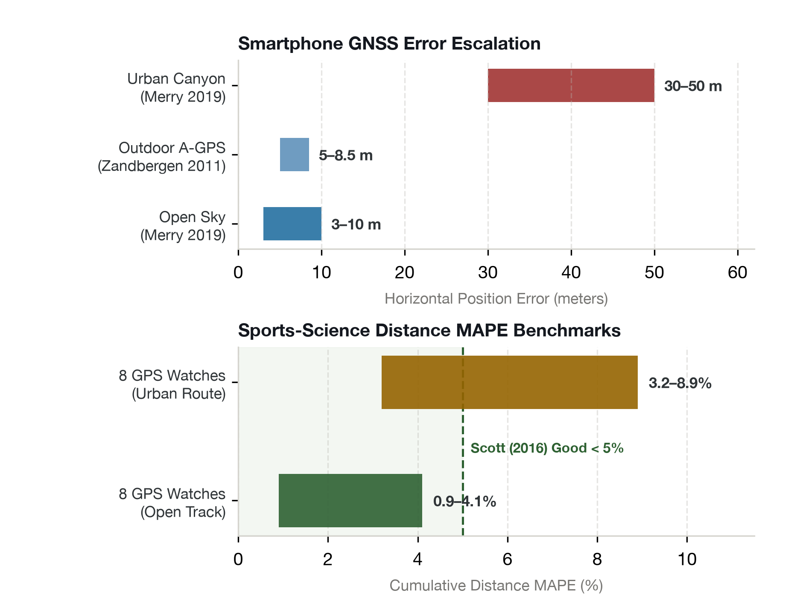
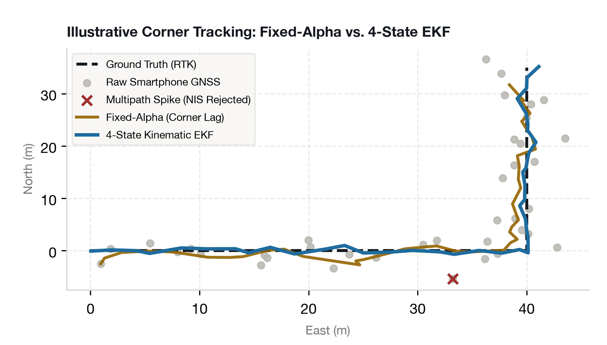
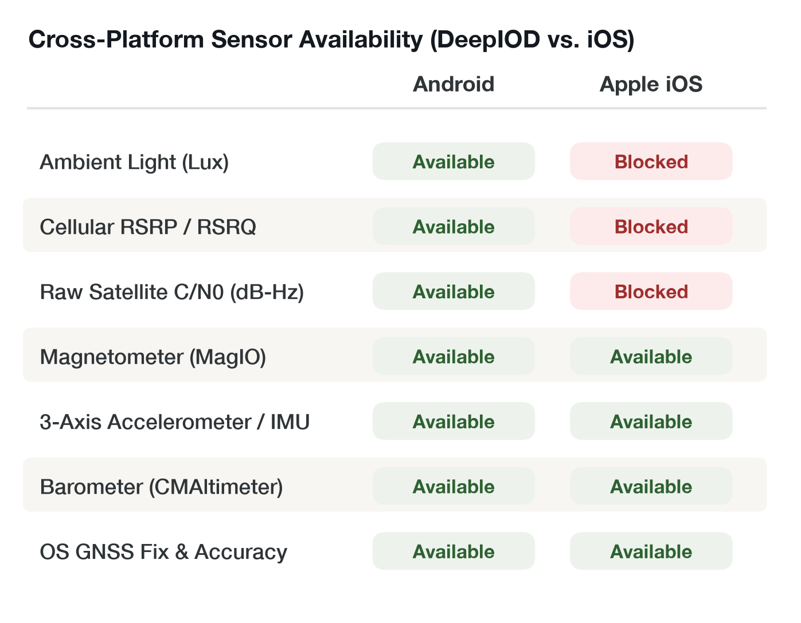
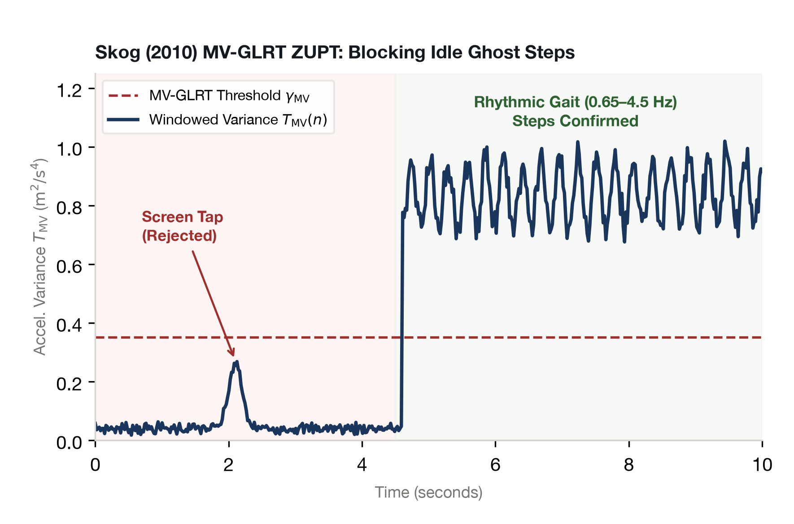
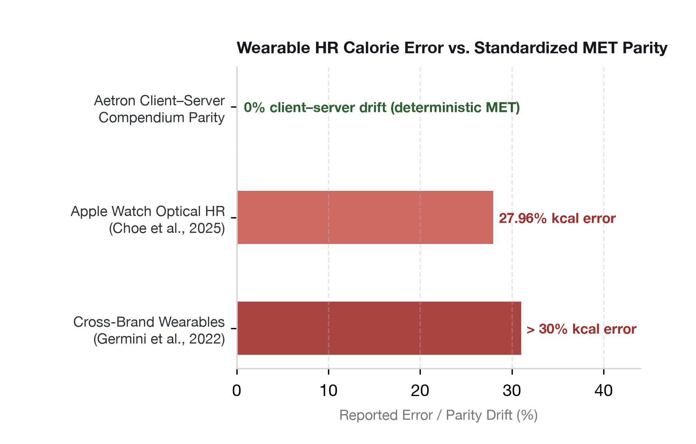

A Mobile Fitness Tracking Application for Indoor and Outdoor Activities
Scientific Foundations of Smartphone-Only GNSS Kinematics, Cross-Platform Indoor/Outdoor Detection, Zero-Velocity Gait Sensing, and 2024 Compendium Calorimetry.
Outdoor GNSS & EKF
- Urban multipath & HDOP
- Haversine vs. Vincenty
- Fixed-Alpha vs. 4-State EKF
- NIS, T-DBSCAN & PCHIP
Cross-Platform IOD
- Rule-based to DeepIOD
- Yoo (2025) C/N0 handover
- Apple iOS API sandboxing
- MagIO + Straightness + HMM
Indoor Gait & Stride
- Oxford WPD & Xu Running
- Skog (2010) MV-GLRT ZUPT
- Cadence window trilemma
- Renaudin (2012) LOSO stride
Energy & Systems
- Wearable HR error (28–30%+)
- 2024 Adult Compendium MET
- Offline-first Isar + SQLite
- Clean Architecture & Deno
Survey & Gaps
- Strava & Nike Run Club
- Samsung Health & Google Fit
- 5 synthesized gaps (G1–G5)
- Direct mapping to O1–O5
Physical Sensor Imperfections
- Low-gain GNSS antennas: NLOS building reflections cause phantom stationary drift, jumps, and canopy blackouts.
- Indoor signal collapse: Steel and concrete roofs destroy satellite lock, forcing Pedestrian Dead Reckoning (PDR).
- Uncalibrated MEMS IMUs: Handheld and pocket motion mixes gait with arm swing, screen taps, and idle tremor.
Systems & Methodological Pitfalls
- Cross-OS asymmetry: DeepIOD models rely on Android light, RSRP, and \(C/N_0\) channels blocked by iOS.
- Lookahead leakage: Offline smoothing and bidirectional Stop & Go papers cannot drive causal 1 Hz HUDs.
- Black-box commercial apps: Proprietary filtering and undisclosed calorie formulas block reproducible auditing.
Geodetic Integration & Accuracy Priors
- Native 1\(\sigma\) accuracy: Android
FusedLocationProvider& iOSCoreLocationreport 68% radial confidence (vs. 50% CEP50 on snapshot loggers, Beuchert 2023). - HDOP amplification: Poor satellite geometry induces stationary drift, multipath jumps, canopy blackouts, and speed spikes.
- Oblateness bound: \(\le 0.55\%\) vs. Vincenty's WGS84 ellipsoid (\(1/f = 298.257223563\)); offline RTK audits use full ellipsoidal ENU projections.


Fixed-Alpha vs. 4-State EKF / AEKF
| Concept | Fixed-Alpha (Pre) | 4-State EKF / AEKF |
|---|---|---|
| State | Position \((\phi,\lambda)\) | \([p_x,p_y,v,\theta]^T\) ENU |
| Noise \(\mathbf{R}_k\) | 3 discrete tiers | Continuous \(\sigma^2 + \text{NIS}\) |
| Gain \(\mathbf{K}_k\) | Fixed \(\alpha \in \{0.34,0.52,0.72\}\) | Optimal \(\mathbf{P}_k^-\mathbf{H}_k^T\mathbf{S}_k^{-1}\) |
| Uncertainty | Not propagated | \(4\times 4\) Joseph-form \(\mathbf{P}_k\) |
| Stationary | 1 Hz walk freeze risk | ZUPT (\(z_v=0\)) + \(\mathbf{Q}_k\) damp |
| Turns | Heuristic \(\alpha=0.82\) | Centripetal \(\dot{\psi}_k\) scaling |
Kinematic Preprocessing
- Physical speed & acceleration ceilings per modality.
- Sliding median spike pruning & bearing-reversal check.
- > 5 s outage partitioning prevents straight-line chords.
- Stay-point dwell tagging (Zheng et al., 2009).
Adaptive NIS Correction
- 2-DOF NIS: \(d_M^2 = \boldsymbol{\nu}_k^T\mathbf{S}_k^{-1}\boldsymbol{\nu}_k \sim \chi_2^2\).
- \(\gamma_1 = 5.991\): inflate \(\sigma_{\text{eff}}\) on mild multipath.
- \(\gamma_2 = 13.816\): reject jump unless 4 consecutive fixes.
- Centripetal turn-rate scaling inflates \(\mathbf{Q}_\theta\) on bends.
Mining & Display Only
- T-DBSCAN collapses red-light pauses (STAGA 2022).
- Monotone PCHIP bridges 2–15 s canopy gaps smoothly.
- HMM map-matching contract + Google Polyline delta.
- Strict rule: P03 never mutates live distance or pace.
Gen 1: Heuristic & Early Fusion
- IODetector (Li 2014): Optical, cellular, and magnetic likelihoods with confidence weights.
- Device shift (Radu 2014): Exposed severe cross-phone sensor calibration fragility.
- Pre-Thesis Aetron: 10-fix deterministic score; stalls on iOS when CoreLocation stops indoors.
Gen 2: GNSS & Handover
- GPS-IOD (Bui 2020): High discrimination using OS-exposed GNSS accuracy and fix availability.
- Seamless Handover (Yoo 2025): Models doorway crossings via satellite \(C/N_0 \in [30, 40]\text{ dB-Hz}\).
- Surveys (Feriol 2020; Angelats 2024): Emphasize barometric pressure deltas & multi-sensor resilience.
Gen 3: Deep Multivariate IOD
- DeepIOD (Dastagir 2024): 8-channel 2D-CNN (Light, RSRP, RSRQ, Mag, Acc, Sound, Prox, Time).
- Cambridge CIOD (Bakirtzis 2022): > 1.47M smartphone epochs benchmark.
- HAR-PMD Warning (2025): Raw-accel CNNs conflate indoor running with outdoors; static accuracy hides doorway flip-flops.

1. MagIO Geomagnetic Stats (Ashraf et al., 2018)
Ferromagnetic building steel perturbs \(\|\mathbf{m}\|\) — 10 distributional features over a causal 10 s buffer.
2. Inertial & Barometric Dynamics (Kelishomi 2019; Feriol 2020)
Triaxial linear acceleration excursion + astronomical daytime + CMAltimeter 10 s pressure deltas.
3. Benhamou Path Straightness Index (2004)
\(S = d_{\text{net}} / \max(d_{\text{path}}, 1.0) \in [0,1]\) separates straight outdoor paths from tortuous indoor jitter.
4. Causal 2-State HMM Forward Filter (Zhu et al., 2019)
\(\alpha_t(s) \propto b_t(s)\sum_{s'}\alpha_{t-1}(s')A_{s',s}\) — stabilizes transitions in 3–4 s with zero lookahead.

Hardware Co-Processors (Brajdic & Harle, 2013)
Android TYPE_STEP_COUNTER & iOS CMPedometer provide low-power baseline step counts.
Oxford WPD — Walking (Salvi et al., EMBC 2018)
13-tap Gaussian FIR smoothing + 35-sample windowed peak scoring + online Welford mean/SD thresholding.
Xu Running — Running (Xu et al., 2022)
Hamming low-pass filter + 256-point DFT dominant gait frequency + adaptive running peak gate.
Live Cadence Window Trade-Off
Benchmarked on video-annotated PedEval (Mattfeld 2021, 90 sessions) and 39 h free-living OxWalk (Small 2022).
Static Ratios vs. Renaudin (2012) Model
- Fixed stature heuristics: \(L = 0.415H\text{--}0.43H\) (walk) or \(0.67H\) (run) (Taborri 2016; Xing 2017) ignore stride elongation at higher speeds.
- LOSO Walking Validation: Optical motion-capture SLEDataset2 (Vezočnik 2021 — 114 sessions).
- LOSO Running Validation: Force-plate treadmill RBDS (Fukuchi 2017 — 84 sessions) with strict zero subject leakage.

Meta-analyses show optical HR wearables still exhibit 28–30%+ caloric error, motivating transparent, auditable MET tables on smartphone-only apps.
2024 Adult Compendium of Physical Activities
- Exact 5-digit activity codes: Speed-banded lookup replacing legacy distance multipliers (Hall 2004).
- Moving-time gated: Excludes user pauses and stationary traffic-light dwells.
- Bit-exact client–server parity: Identical lookup tables in Dart client and Supabase Deno finalize worker.
- Honest scope disclosure: Population-average gross MET, not individual laboratory \(\dot{V}\text{O}_2\) calorimetry.
| Application | Documented Capabilities | Calorie Model | Contrast / Gap vs. Aetron |
|---|---|---|---|
| Strava (2026) | Outdoor GNSS routes, segments, splits, pace analysis | Grade-adjusted speed × weight × moving time (undisclosed) | Strong outdoor reference; proprietary outlier & smoothing internals. |
| Nike Run Club (2024) | Explicit outdoor GNSS and indoor motion modes | BMR/BMI + weight + distance + pace (undisclosed) | Validates dual-mode UX; zero open doorway/IOD transparency. |
| Samsung Health (2024) | OS hardware step counters, multi-activity tracking | Body profile + optional wearable HR (undisclosed) | Android sensor benchmark; lacks iOS light-free IOD docs. |
| Google Fit (2026) | Sensor/recording APIs, step distance, offline sync | Activity + body metrics + BMR (undisclosed) | Clean API pattern; omits RTK/IMU scientific holdout audits. |
| Aetron (This Work) | Open Flutter 4-State EKF/ZUPT, MV-GLRT pedometry, Cross-Platform IOD, Isar + Deno | Published 2024 Adult Compendium speed-banded MET (bit-exact parity) | Fully documented, DOI-grounded pipeline with open holdout benchmarks & disclosed negative results. |
isObservationalOnly = true isolation + dwell hysteresis.StepMotionGate + 6 s cadence + LOSO Renaudin stride.- Kalman (1960); Gelb (1974); Groves (2013) — GNSS & Inertial Navigation
- Rong Li & Jilkov (2003); Sukhenko et al. (2025) — Adaptive EKF & NIS
- Merry & Bettinger (2019); Scott (2016); Gilgen-Ammann (2020) — GPS MAPE
- Zheng (2009, 2015); Li et al. (2025); Ester (1996); Fritsch & Carlson (1980)
- Newson & Krumm (2009) — Hidden Markov Map Matching
- Li et al. (2014) IODetector; Bui (2020) GPS-IOD; Bakirtzis (2022) CIOD
- Dastagir et al. (2024) DeepIOD; Yoo (2025); HAR-PMD (2025)
- Ashraf (2018) MagIO; Kelishomi (2019); Benhamou (2004); Zhu (2019) HMM
- Skog (2010) MV-GLRT; Brajdic & Harle (2013); Salvi (2018); Xu (2022)
- Renaudin (2012) Stride; Herrmann (2024) Adult Compendium; Choe (2025)